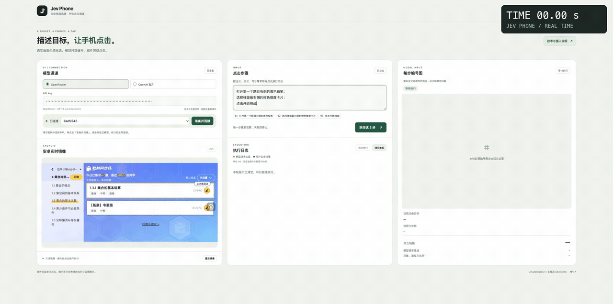
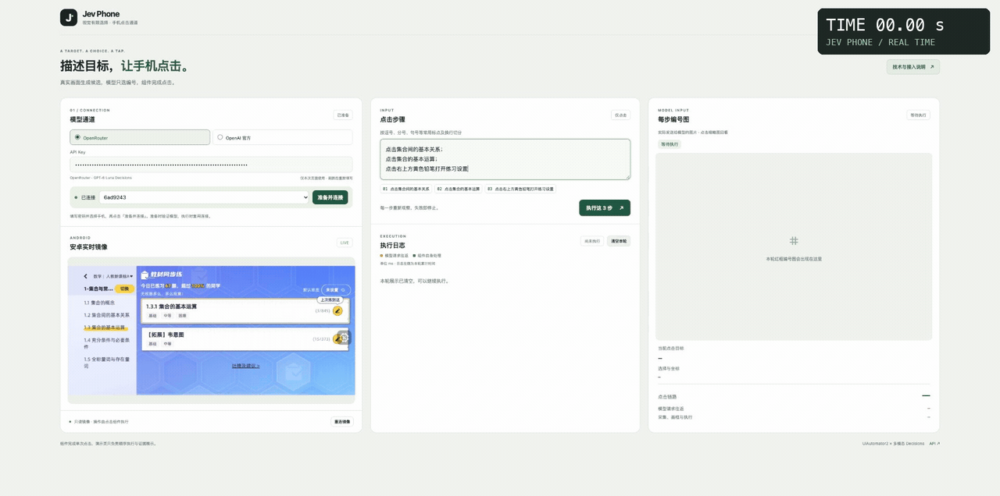
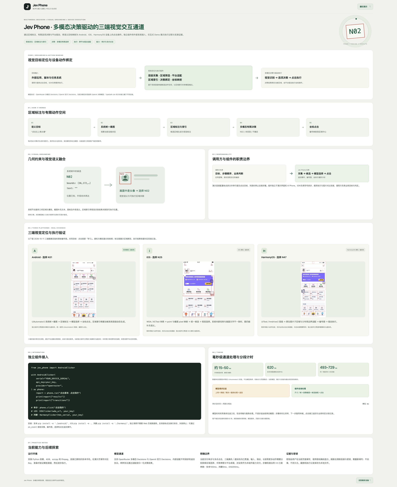

Jev Phone
多模态决策驱动的三端视觉交互通道。

当前 Demo 首页，真实安卓手机，原速连续执行。 打开练习设置 → 选择最右侧橙色“困难”卡片 → 开始挑战。右上角秒表按原始页面帧时间戳计时，执行期间没有加速或删等待；最终题目确认显示“难度：困难”。
| 当前步骤 |
模型识别请求往返 |
| 打开练习设置 |
1944.83ms |
| 选择橙色困难卡片 |
1025.65ms |
| 开始挑战 |
765.28ms |
三个步骤的模型识别均低于2秒；整段执行6570.28ms，包含截图、点击及V3步骤衔接。录像保留完成后的短暂停留。查看原速视频 · 计时记录

Android · iOS · HarmonyOS ／ 真机 · 虚拟机
独立 Python SDK · 单步与多步点击 · MIT 开源
点击演示 · 技术与接入说明 · 安装与调用 · 毫秒计时
第一页 / 描述目标，让手机点击。
A TARGET. A CHOICE. A TAP.
真实画面生成候选，模型只选编号，组件完成点击。

另一个实际例子：浏览章节并打开设置

“看看集合间的基本关系 → 转到集合的基本运算 → 打开练习设置”。三步模型识别分别827.78、693.05、1999.53ms，均低于2秒；保留完整图片对比衔接。原速视频 · 计时记录
这一页把一条点击链路直接展开给你看：连接手机和模型 → 输入目标 → 查看实际手机画面 → 查看每步编号图、模型选择、坐标与耗时。右上角“技术与接入说明”翻到下面的技术页。
01 / CONNECTION · 模型通道
支持 OpenRouter 多模态 Decisions 与 OpenAI 官方 Decisions，通过协议适配归一化模型结果。
选择通道、填写对应 API Key、选择安卓设备，点击“准备并连接”。准备阶段验证模型通道，执行阶段复用设备服务和模型客户端。
- OpenRouter：
openai/gpt-6-luna-decisions。
- OpenAI 官方：
gpt-6-luna，调用时使用 provider="openai"。
- Key 仅在本次页面中使用，密码掩码展示；刷新后清除连接与密钥，需重新填写。
ANDROID · 安卓实时镜像
真实手机画面与执行过程并排展示。镜像为只读视频通道，由 scrcpy 与 ffmpeg 承接；实际操作由 SDK 点击组件执行。
镜像与定位截图分工明确：镜像用于人查看，模型使用每步实际采集和标注的截图。当前网页体验端为安卓，SDK 同时提供三端接入。
可以输入一段内容，按约定的中英文标点和换行拆成多个点击步骤：
点击底部导航栏的星球；
点击底部导航栏的我的
每一步只传当前这一句目标。 不把整段任务、上一句或执行历史一起交给模型。当前步骤完成后，用图片对比衔接下一步，并复用对比返回的最后一帧；定位或点击失败停止后续步骤。对比到4秒预算仍未确认稳定时，沿用V3返回最后一帧继续，不额外拦截。

SDK 和 Demo 使用同一套执行流程。SDK 的 run() 接收整段内容，自动拆步、遍历执行并汇总结果；单步 click() 继续保留。
EXECUTION · 执行日志
日志逐步展示：
| 阶段 |
你能看到什么 |
| 目标 |
当前这一句点击目标 |
| 观察 |
当前系统树与设备截图 |
| 编号图 |
本步生成的候选数量、实际发给模型的图片 |
| 选择 |
模型选中的编号及其绑定坐标 |
| 点击返回 |
平台驱动完成回执与单步耗时 |
| 步骤衔接 |
图片对比返回状态、采样次数与衔接耗时 |
日志左侧记录本轮累计毫秒；模型请求往返与组件自身处理分别计时。当前不再追加每步结束后的展示截图。
展示的是实际发送给模型的图片。 每张图上的红框与编号来自当前系统层级，并绑定到对应区域。点击缩略图，可以回看该步的目标、选中编号、坐标与分段耗时。
三端图片见下方“视觉定位与执行验证”。这些图将视觉识别、有限选择与可执行位置放在同一帧中展示。
第二页 / 技术与接入说明
MULTIMODAL DECISION × VISUAL GROUNDING × DEVICE EXECUTION
Jev Phone · 多模态决策驱动的三端视觉交互通道
通过区域标注、有限选项决策与平台驱动，将语义目标映射为 Android、iOS、HarmonyOS 设备上的点击操作。独立组件供外部系统接入，交互式 Demo 展示执行过程与实测证据。
| 视觉定位 |
决策 |
执行 |
当前能力 |
| 区域标注与索引 |
多模态有限选择 |
跨平台驱动适配 |
单步与多步点击 |
查看官网第二页的完整原貌

CORE / 视觉目标定位与设备动作绑定
| 目标输入 | 视觉定位与执行组件 | 多模态决策与驱动执行 |
|---|
外部应用、脚本与任务系统
调用方提供语义点击目标，SDK 负责顺序执行。 | 层级采集 · 区域筛选 · 平台适配
区域索引 · 决策绑定 · 坐标映射
基于系统层级构建候选动作空间，以区域索引约束模型输出。 | 视觉识别 → 选项决策 → 点击执行
决策结果绑定当帧区域，由平台驱动执行坐标操作。 |
这条通道可以接入已有 AI、Planner、缓存或脚本。它承接已明确的点击目标；接在外部技术栈的哪个环节，由使用者决定。
模型协议为 OpenRouter 多模态 Decisions / OpenAI 官方 Decisions。当前实现使用多模态决策模型；TypeSafe Jev 的原生文本接口属于不同后端。
01 / 区域标注与有限动作空间
| 01 · 语义目标 |
02 · 系统树＋截图 |
03 · 区域标注与索引 |
04 · 多模态有限决策 |
05 · 坐标点击 |
| “点击左上角头像” |
观察当前设备状态 |
筛选候选区域，生成红框和编号 |
N02 / NOT_FOUND / UNCERTAIN |
编号映射到区域中心，由驱动执行 |
每步独立采集并生成区域索引。请求包含当前目标、候选属性和标注截图；设备服务与网络客户端持续复用。模型选择被限制在当前候选空间中，结果直接绑定到当前帧中的执行区域。
02 / 几何约束与视觉语义融合

系统节点提供几何区域与属性，截图补充文本、图标及外观语义。区域索引将视觉识别结果关联到可执行位置。
例如节点 N02 的文字可能为空，但画面中明确显示头像。树提供它的边界，模型依据画面识别头像并选择 N02，组件将这个选择映射成点击坐标。
这是结构示意；实际模型输入与执行结果在 Demo 中逐步展示。
03 / 调用方与组件的职责边界
| 调用方负责 |
Jev Phone 负责 |
| 业务目标、目标顺序、业务判断 |
符号拆步、顺序执行、步骤衔接 |
| 应用逻辑、测试流程及任务编排 |
系统层级与截图采集、候选区域与编号 |
| 提供已准备好的设备服务与模型 Key |
多模态有限选择、坐标映射与平台点击 |
| 接收结果并组织自己的后续流程 |
返回事件、编号图、坐标和毫秒计时；失败停止 |
SDK 独立于演示界面和 AI Phone。Demo 是它的使用者；接入自己的程序不需要网页或数据库。
04 / 三端视觉定位与执行验证
Android、iOS、HarmonyOS 的真机／虚拟机均已贯通。
| Android · 真机／虚拟机 | iOS · 真机／虚拟机 | HarmonyOS · 真机／虚拟机 |
|---|
 |  |  |
Android · 选择 N31
UiAutomator2 系统树＋截图 → 区域标注 → 模型选择 → 坐标点击。区域索引根据当帧系统层级动态生成。 | iOS · 选择 N25
WDA / XCTest 快照 → point 与截图 pixel 映射 → 统一候选 → 视觉选择。系统名称与画面文字不一致时，图像补充语义。 | HarmonyOS · 选择 N47
UITest / hmdriver2 层级 → 图片子区域与父布局边界适配 → 编号图 → 驱动执行。 |
沿用官网三张原始编号图，图片不改。图片分别来自安卓真机、iOS 虚拟机、鸿蒙虚拟机的既有实验，共同目标为点击底部“学习”；平台标题表示当前 SDK 的真机／虚拟机支持范围。
三端共享定位流程，通过平台适配处理层级、坐标与驱动差异。完整环境准备见 三端设备准备，支持范围见 验证概览。
05 / 独立组件接入
安装
Python 3.10+，克隆仓库后按平台安装：
git clone https://github.com/dongxinsuperman/jev-phone.git
cd jev-phone
python3 -m venv .venv
# Android
.venv/bin/pip install -e '.[android]'
# iOS：连接你已准备好的 WDA
.venv/bin/pip install -e .
# HarmonyOS
.venv/bin/pip install -e '.[harmony]'
一段目标直接执行
from getpass import getpass
from jev_phone import AndroidClicker, RunFailure
with AndroidClicker(
serial="YOUR_DEVICE_SERIAL",
api_key=getpass("OpenRouter Key: "),
provider="openrouter", # 官方通道填 openai
) as phone:
try:
report = phone.run("点击底部导航栏的星球；点击底部导航栏的我的")
print(report["results"])
print(report["transitions"])
except RunFailure as error:
print(error.report)
单步调用：phone.click("点击底部的我的")。iOS 使用 IOSClicker(wda_url, api_key)；鸿蒙使用 HarmonyClicker(hdc_serial, api_key)。
run() 按中英文逗号、分号、句号、问号、感叹号及换行机械拆步，最多20步。每段只描述一个点击目标；支持采集、编号图、模型选择、点击返回与步骤衔接事件，使用 on_event 接收。
多设备并行
.venv/bin/pip install -e '.[android,harmony]'
.venv/bin/python examples/parallel.py examples/devices.json
配置设备编号、WDA地址及每台设备的目标序列。不同设备并行，同设备顺序执行；每台设备的截图、候选和结果独立。公开调用方式、返回字段及失败处理见 SDK 接入指南。
06 / 毫秒级通道处理与分段计时
官网记录了前期安卓常驻 UiAutomator2 实验的毫秒级处理数据：
| 本地候选处理、画框与编码 |
安卓非模型整轮实测中位 |
同一导航样本9轮范围 |
| 约15–50ms |
620ms |
493–729ms |
这组数据不含模型请求、初始化与步骤稳定衔接；是对应实验的记录。首屏秒表实录直接展示当前独立 SDK 和 Demo 的模型定位、步骤衔接与连续点击节奏。
| 模型请求往返 | 组件自身处理 |
|---|
| 上传＋网络／网关＋服务处理＋返回 | 尺寸／树＋按需截图＋候选画框＋点击 |
单步总时间 = 模型请求往返 + 组件自身处理。单位均为 ms。
整段执行另记录步骤间图片对比的耗时、采样次数和状态。不逐步追加结束后截图；下一步直接复用对比末帧。
| 平台 |
已对齐的截图／取树／点击通道 |
对比额外采样间隔 |
| Android |
UiAutomator2 原生 JPEG、实时显示尺寸、原生树与坐标点击 |
100ms |
| iOS |
WDA 按需截图、XCTest 文字区域与控件候选、pixel/point 映射、临时缩短点击内部等待并恢复 |
200ms |
| HarmonyOS |
原生 JPEG、UITest captureLayout 直返树、直接点击完成回执 |
0ms |
0ms 指不添加采样 sleep，截图本身仍有耗时。客户端空闲连接有效期60秒；模型与网络、页面和设备负载影响实际端到端耗时。
07 / 当前能力与实践约定
运行环境
SDK 是独立 Python 包。安卓准备 ADB / UiAutomator2，iOS 提供已有 WDA 地址，鸿蒙准备 HDC / UITest；真机与虚拟机共用平台适配。WDA签名、设备池和虚拟机生命周期由使用者准备。
模型通道
支持 OpenRouter 多模态 Decisions 与 OpenAI 官方 Decisions，适配不同的请求／返回协议，归一化有限选择结果。对应 Key 不可混用。
明确边界
当前交付单步与多步点击，三端真机／虚拟机均已贯通。输入、滚动、长按等动作可由使用者二次开发。业务判断由调用方完成；driver_completed 表示平台驱动返回。
证据与密钥
Demo 的 Key 仅在当前页面使用，刷新后清除。SDK 示例从环境变量或隐藏终端输入获取 Key。截图与执行记录保存为本地产物，不把 Key、原始日志或个人设备配置上传仓库。
启动官网 Demo
.venv/bin/pip install -e '.[demo]'
.venv/bin/jev-phone-demo
本机准备 adb、scrcpy、ffmpeg，打开 http://127.0.0.1:8765/。选择手机与模型通道，填写 Key，准备连接后输入点击步骤。网页提供安卓只读实时镜像、日志与编号图；SDK 三端调用不依赖这个网页。
接入资料与开源
Jev Phone · 多模态有限决策、视觉定位与跨平台动作绑定。当前从 GitHub 源码或 wheel 安装，尚未发布到 PyPI。